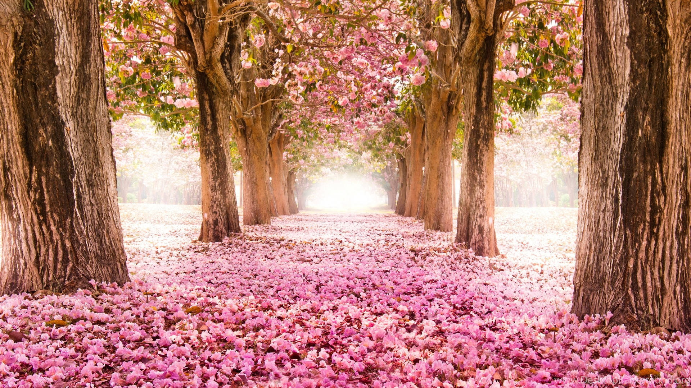
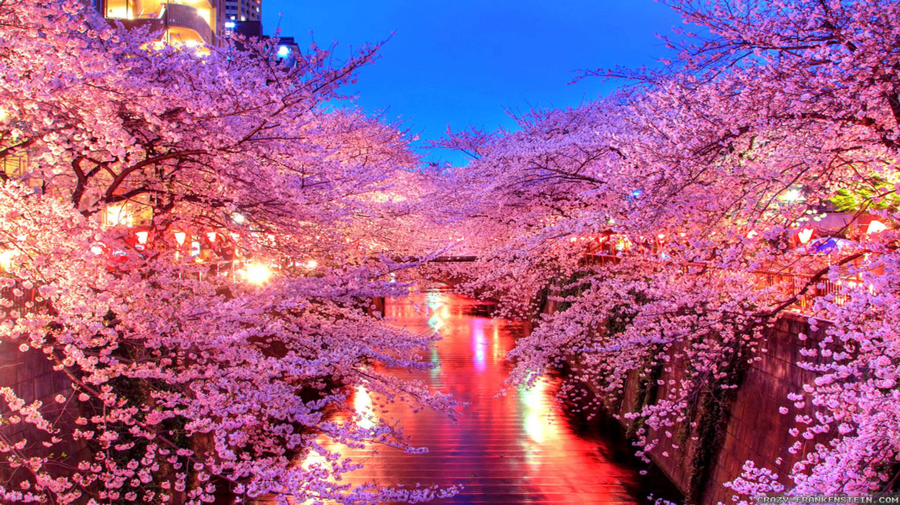

A primavera é conhecida como a estação das flores, um período em que a natureza desperta com todo o seu esplendor após o frio do inverno. As temperaturas se tornam mais amenas, os dias começam a ficar mais longos e o colorido das flores enche os campos, jardins e ruas com vida e beleza. É uma estação marcada pelo renascimento. As árvores voltam a brotar, os pássaros cantam mais intensamente e o ar parece mais leve e perfumado. A primavera inspira esperança, renovação e otimismo é como se o mundo se preparasse para recomeçar. Além da beleza visual, a primavera também influencia o humor das pessoas. Muitos sentem-se mais dispostos, animados e conectados com a natureza. É uma época em que florescem não apenas as plantas, mas também sentimentos, ideias e sonhos. As chuvas leves ajudam a manter o verde vivo, e os campos se tornam palco de um verdadeiro espetáculo natural. É também um período importante para a agricultura, pois marca o início do crescimento de muitas culturas. Em resumo, a primavera é uma estação de encantamento e transformação. Um lembrete gentil de que, mesmo após os períodos mais frios e cinzentos, a vida sempre encontra uma forma de florescer novamente.
Essas são imagens deslumbrantes da primavera:
  Conhecimento sobre a primavera